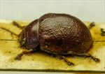
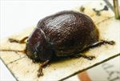
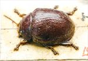
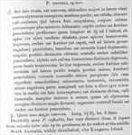

Click on images to enlarge
{kind=link}

Fig. 1. Paropsis propria type specimen, lateral view
{kind=link}

Fig. 2. Paropsis propria type specimen, oblique view
{kind=link}

Fig. 3. Paropsis propria type specimen
{kind=link}

Fig. 4. Paropsis propria, description
Name
Paropsis propria Blackburn, 1896
Corresponds to
This species could be Ta15 or Ta118 (see Diagnosis and Notes below).
Diagnosis and Notes
Blackburn deals with P. propria as part of his 'subgroup ii' (i.e., those species without "strongly marked characters", whose greatest height is not or scarcely in front of the middle of the elytral margin and whose elytra are depressed under the humeral callus). Within that group, in his key to the species, he characterises it as:
A. Inner edge of humeral callus distinctly nearer to lateral margin of elytra than to suture;
BB. Sides of prothorax not at all explanate;
C. Elytra not having well-defined transverse wheal-like ridge;
DD. Form less wide; elytra not wider than long [i.e., form is not nearly circular];
E. Prothorax with somewhat evenly rounded sides; only moderately narrower in front than at base;
F. Puncturation of elytra not particularly fine and close;
G. Disc of prothorax closely and evenly punctulate;
HH. Prothorax at its widest at the middle.
In his description of P. cribrata, Blackburn indicates that it is very close to propria, with a major differentiating feature being the coarser puncturation in the sub-basal impression of the elytra in T. propria. Another species that he finds very similar is T. declivis.
From a comparison to the type specimen and description, this may be the same species as Ta15 or Ta118. They are of similar size, the sculpture and colouring of the dorsal surface are rather similar, the HCE/BL values are in agreement, and they occur in the same geographical area. However, both Ta15 and Ta118 have scutellums that are finely but certainly not "densely" punctured. In addition, both have a prothorax that is widest some distance behind the middle, though Blackburn never clearly defines this character and it is probably best not to place too much store in it. On balance, I would consider it more likely to be the same as Ta15, from the more rugulose elytral surface and more flattened shape of the type specimen. However, with only 3 specimens of Ta118 to compare with, this is hardly definitive.
Type specimen
Location: BMNH
Label data: /“Type” (red-bordered circle)/ “Blackburn coll. 1910-236.”/ “Paropsis propria, Blackb.”/ “751” (in red on card with specimen)/.
A male according to Blackburn, but could not confirm because of card mounting; Size: 8.0 (L) x 5.8 (W) x 3.3 (H) mm; HCE/BL: ~18.5% (estimated from lateral view in photo).
A mid-brown species devoid of verrucae but with some rugulosity in interstices, no dark markings anywhere.
Original description
Translation of original description (Figure 4) by ChatGPT, 03/2026:
♂. Rather broadly oval, fairly convex; greatest height (seen from the side) situated about the middle of the elytral margin; fairly shining; dark reddish-chestnut (toward the sides almost blood-red), underside and antennae more or less infuscate. Head rather densely and strongly punctured. Prothorax broader than long in the ratio 2½ : 1, widened from the apex to well beyond the middle, transversely impressed behind the anterior margin; densely and rather strongly punctured (as on the head, but coarser and rugose at the sides); sides moderately rounded, not flattened; posterior angles distinctly obtuse. Scutellum densely and finely punctured. Elytra distinctly depressed beneath the humeral callus, base with a slight transverse impression; densely and strongly punctured in somewhat irregular rows (slightly more so at the sides, less so posteriorly); with some indistinct verrucae (of the same colour as the surface) arranged in rows; interstices only slightly rugulose; marginal area fairly broad and distinctly separated from the disc (by a moderately broad, interrupted groove before the middle); inner margin of the humeral callus distinctly farther from the lateral margin than from the suture. Basal ventral segment fairly densely and strongly punctured. Female more strongly convex than male. Length 3⅗–3⅘ lines [~7.6-8.1 mm], width 3 lines [~6.4 mm].
References
Blackburn, T. 1896, "Revision of the genus Paropsis. Part I", Proceedings of the Linnean Society of New South Wales, vol. 21, no. 4, 637-693 (page 669).
Copyright © 2026. All rights reserved.